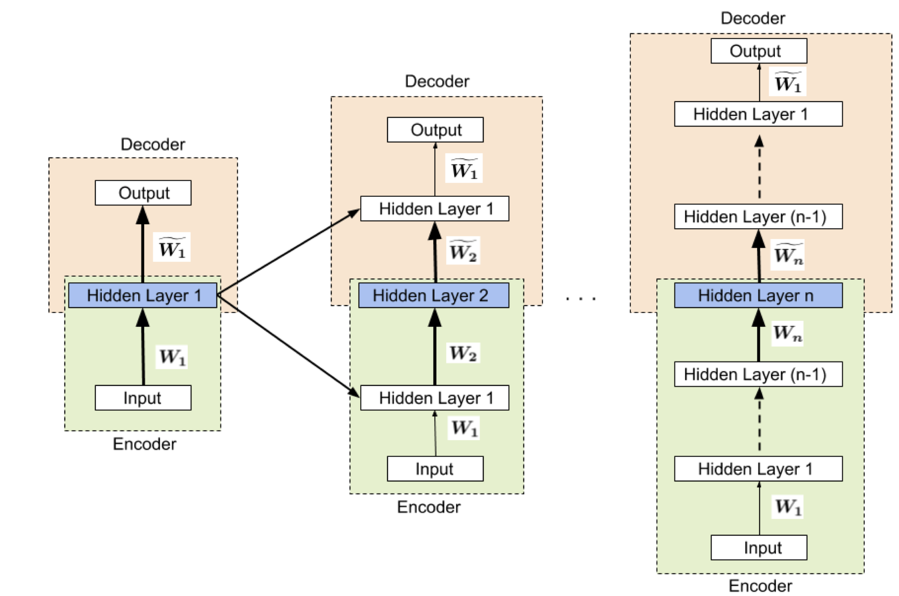

Figure 1 below is an representation of the Pre-Training Process of the Hidden Layers
Pre-Training with Layer Freeze Step: To begin this pre-processing strategy,we will use the input-output pair (xi,cj) to each hidden layer. This strategy involves adding new hidden layers sequentially to a neural network during the training process. Each new layer added aims to map the samples of a class to its centroid, which is the central point of that class in the dataset.Upon the addition of the new layer, the weights parameters in the previous trained layer is "frozen". In this instance, "frozen" is considered to be kept constant and the new layer's weights are adjusted as we continue to train the data. (Note that our pre-training is supervised)
Sequential Learning: First Hidden Layer: In the first hidden layer, we began the training. To produce the training of the first hidden layer, we implement the backpropagation function using chain rule processes to evaluate the updates to the weights. From observing the model, notice that our parameters that are being updated in the initial state is θ =(W1,W~1) .Once the first layer weights are learned, we initialize another hidden layer with a random set of weights and the first layer's weights are frozen and no longer updated during training the second layer. In other words, they are fixed.This process is repeated until all hidden layers are added and trained.
End-to-End Fine Tuning : In the output layer, the final phase of the training, all of the layers are unfrozen and the weight parameter is updated across the entire network at the same time.
< 